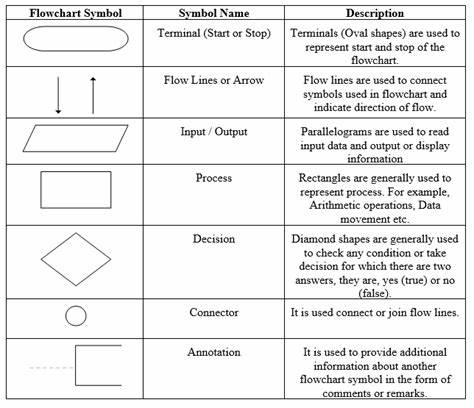

Computer system
1.1 Introduction of computer
Computer is an electronic device device derived from the Latin word "computere" which means to calculate.
It accepts raw facts and figures as an input which are isolated and uninterpreted through input device,
process it according to the requirement of the user or command supplied by the user, store it before and
after processing of require and produce a meaningful information as an output through an output device. Generally,
computer works on IPO (Input-Process-Output) cycle. It follows GIGO (Garbage In Garbage Out) algorithm which
means the output is always based on the input supplied by the user. The basic operation of computer is illustrated
by following block diagram.
Characteristics/Features of a Computer
The implementation of computers is not limited to a small area; rather, they are used for simple domestic tasks as well as complex scientific research and engineering. The use of computers is increasing day by day due to the special features or characteristics they possess. Several features of computers are:
1. Accuracy
Computers are highly accurate machines, which means the results produced by computers are 100% accurate. Since they follow the principle of GIGO (Garbage In, Garbage Out), the errors that may arise in the output are due to human input, not the computer itself.
2. Speed
Computers work at tremendously high speeds. The operating speed of a computer is measured in milliseconds, microseconds, picoseconds, and nanoseconds, which means a computer can perform millions and billions of instructions per second.
3. Storage
Storage refers to the capacity or unit capable of storing data and information for both present and future use. Storing data allows users to retrieve it whenever required. Modern computers come with a high volume of memory, which is measured in units such as Megabytes (1024 KB), Gigabytes (1024 MB), Terabytes (1024 GB), and Petabytes (1024 TB).
4. Versatility
Computers are generally designed to serve more than one type of work. Their implementation is not limited to a specific purpose. Instead, they solve a wide range of general requirements for the user and can be used for various tasks.
5. Diligence
A key feature of computers is diligence, meaning that they do not get tired even after working for long periods of time. Computers can perform any number of tasks continuously until they are completed. Once an instruction is given, the computer follows the command until it is terminated.
6. Automatic
Computers are automatic machines. Once the instructions are generated, they perform accordingly until the command is terminated. We don't need to issue continuous commands to operate the computer. This ability to perform tasks automatically is one of the defining features of computers.
Applications/Implementations/Uses of Computers
The use of computers is increasing day by day. Every aspect of human life is highly influenced by computers. From simple domestic use to complex engineering and scientific solutions, computers can be used. This is due to the versatility of computers. Some of the basic implementations of computers are:
1. Education
Nowadays, computers are highly used in the teaching and learning process. Many interesting graphics can be made and provided for easy learning. Also, computers provide features of the internet, which make learning easy and fun.
2. Communication
Computers are massively used in communication. Communication is done through e-mail, chat, online conferencing, e-fax, etc., with the help of the internet. Computers have made communication faster, easier, and cheaper.
3. Business
In the business sector, computers are used to generate invoices, maintain stock, and perform statistical analysis. E-commerce is an emerging way of buying and selling goods and services through the use of electronic means and media.
4. Engineering and Designing
Scientific and engineering design requires complex and massive computations. The design of bridges, towers, buildings, generators, motors, electrical transmission systems, etc., requires precise computations, which are done through computers.
5. Science and Research
In scientific research, computers are used for simulations, data analysis, and solving complex equations. They help in handling vast amounts of data, creating models, and performing experiments that would be impossible manually. Researchers use computers to predict outcomes and test hypotheses.
6r. Military
In the militay, computers are used for various tasks, including strategy planning, data analysis, weapons control systems, and communication. Computers assist in creating simulations for training, monitoring troop movements, and managing logistics. They also play a key role in cybersecurity and intelligence gathering.
7. Industry
In the industrial sector, computers are used for automation, monitoring production lines, controlling machinery, and maintaining efficiency in manufacturing processes. They help optimize operations, reduce errors, and improve product quality. Computer-aided design (CAD) is used in designing products, while computers control robotic systems and factory operations.
8. Medicine
In medicine, computers are used for managing patient data, medical imaging, diagnostics, and research. They assist doctors in performing surgeries through robotic systems, analyzing medical tests, and storing and retrieving patient records electronically. Medical devices such as MRI machines and CT scanners rely on computer systems for their functioning.
9. Robotics
Robotics relies heavily on computers to design, control, and manage robots. Computers enable robots to perform tasks autonomously, execute complex algorithms, and process sensory data for decision-making. They are used in industries, healthcare, and space exploration, making operations more efficient and reducing human labor.
10. Transportation
Computers are extensively used in transportation for route planning, traffic control, GPS navigation, and vehicle automation. They play a crucial role in the development of self-driving cars, traffic management systems, and real-time tracking for logistics. Computers also support the operation of air traffic control systems and vehicle diagnostics.
Capabilities and Limitations of Computers (Pros and Cons)
| Advantages |
Disadvantages |
| Computer is capable of handling a larger volume of data and can store a huge amount of data. |
Computer is a dull machine; it cannot make decisions on its own. |
| Computer can perform millions of instructions within a limited time frame with the same speed and accuracy. |
Computer requires electricity or a battery in order to operate. |
| Computers are used to fulfill the general requirements of the user. |
It can affect human eyes when used for long periods of time. |
| It provides a faster and cheaper way for communication. |
It requires several peripheral devices and software to run. |
| Computers are used to solve complex and critical situations in which the involvement of humans is almost impossible. |
It cannot think, learn, or react like humans. It cannot draw conclusions or provide feedback. |
Generations of Computers
History of computers dates back to the mechanical era, where computers were not used for general purposes. It took a long period of time to come to this phase. The development of computers has passed through different eras, from mechanical to electro-mechanical to digital computers. The development in different electronic components, precise engineering, and high-tech technology has drastically changed the operation of computers. Earlier, computers were only used for specific purposes, such as counting and performing basic mathematical operations. Later on, due to the necessity and requirement of users, different general-purpose computers were developed. Therefore, the classification of computers based on major electronic components, their architecture, and modes of operation is known as the generations of computers. Five different generations of computers are listed below along with their distinct features.
1. First Generation Computers (1946-1958)
- They used vacuum tubes as their basic electronic components used to control and amplify electronic signals.
- They were big in size, consumed more electricity, and generated large amounts of heat, thus requiring air conditioning systems to keep devices cool.
- They were unreliable and were prone to frequent hardware failure.
- They were normally not used for commercial purposes.
- Machine-level language was used to program these computers.
- Examples: ENIAC, EDVAC, EDSAC, UNIVAC
2. Second Generation Computers (1959-1964)
- They used transistors as their basic electronic components.
- They were smaller in size compared to the first generation, consumed less electricity, and generated less heat.
- They were less prone to hardware failure, making them more reliable.
- They were not used for commercial purposes because production was difficult and costly.
- Assembly language was used to program these computers.
- Examples: IBM 7000, IBM 1401, IBM 1620, NCR 304, MARK III, ATLAS
- Note: The first computer brought to Nepal was IBM 1401 for the population census of 2028 BS.
3. Third Generation Computers (1965-1974)
- They used Integrated Circuits (IC) as their basic electronic components.
- They were smaller in size, consumed less electricity, and generated less heat.
- They were faster and more reliable compared to the first and second generations.
- They were widely used for commercial applications worldwide.
- High-level languages were used to program these computers.
- Examples: PDP-8, PDP-11, ICL 2900 series, IBM 360, IBM 370
4. Fourth Generation Computers (1975-1990)
- They used VLSI (Very Large Scale Integrated Circuits) as their main electronic components.
- Their size was drastically reduced, making them much more portable.
- They were faster in processing and more reliable.
- They had larger memory, up to GB and TB.
- They used different advanced high-level languages to program these computers.
- Examples: Apple Macintosh, IBM PC
5. Fifth Generation Computers (1990 - Onwards)
- They use ULSIC (Ultra Large Scale Integrated Circuit) or Microprocessors as their major electronic components.
- They have or will have artificial intelligence.
- They have tremendously high processing units due to parallel processing.
- They are capable of image processing, speech, or voice recognition.
- They use different high-level languages to program these computers.
1.2 Introduction to computer system
The word system refers to the integration of several individual independent unit which are integrated together to achieve a common objective or goal. System is a set of detailed method, procedure and routines created to carryout a specific activity, performs a duty or solve a problem. In a system different unit co-ordinate with each other so that they work as a whole. Without any of the unit whole system is affected.
Similarly. computer system is also a Combination on hardware, software and peripherals which are organized together to run our computer system smoothly. Basically, our computer System works on IPO (Input Process Output) cycle. So, it is mandatory/compulsory to have different unit work together as a whole in order to convert raw facts and figure into meaningful information. Without any one of these unit computer starts malfunctioning.
The design, arrangement, construction or organization a different parts of computer system is known as computer architecture. It is the conceptual design and fundamental operational structure of a computer system. It is a framework which focus in how CPU performs internal operation. So computer architecture may also be define as the science and art of selection, inter connecting hardware components to create computer to meet functional performance and cost.
Basic Components of a Computer System
Hardware: Hardware is the physical devices of the computer which we can touch and see. Without hardware, software cannot work. It includes input devices, output devices, processing devices, and storage devices. For example, devices like the keyboard, mouse, CPU, hard disk, and RAM are commonly used hardware devices.
Software: The collection set of instructions is known as a program, which performs some specific function. These programs are integrated together to work as software. Software describes how hardware should function and helps in proper utilization and mobilization of computer hardware. For example, operating systems, MS-Office, and billing software are examples of software.
Data/Information: The raw facts and figures that are isolated, uninterpreted, and don't give any sense are known as data. Data is fed into the computer for processing as input through input devices. Meanwhile, the meaningful result obtained after processing data according to the supplied instructions is known as information. Information is generally the processed version of data, which is obtained as output through output devices.
People/User: It is the most important part of the computer system. People operate the computer hardware and create the computer software. People help to generate commands to operate the computer system. Without users, no hardware and software can be mobilized.
Procedure: Procedures are the descriptions of how things are done. They include steps for converting raw facts and figures into meaningful information. It includes the general guidelines of how computers should be used.
Communication: Once the computer system is set up, there is a tremendous amount of data flow between users and the computer, and vice-versa. The data is shared among different components of the computer system in the form of electronic signals. The exchange of data and information between several components can also be termed as communication.
Basic Hardware Components of a Computer System
1. Input Unit
Data and instruction must enter the computer system before any computation can be performed on the supplied data. The input device accepts data and instructions from the user. Hence, the device or unit which is used to feed raw facts and figures to the computer system for processing, along with a set of instructions, is called the input unit. It also converts input data into a suitable form that is accepted by the computer system. Generally, it acts as an interface/bridge or medium through which communication between the user and computer takes place.
In short, the following are the functions performed by the input unit:
1. It accepts the list of instructions and data from the outside world.
2. It converts the supplied instruction and data into a computer-acceptable form (binary code).
3. It supplies the converted instruction and data to the computer system for further processing.
Some of the commonly used input devices are: Keyboard, trackpad, touchscreen, mouse, light pen, scanner, BCR, MICR, OCR, joystick, trackball, etc.
2. Output Unit
The job of an output unit is just the reverse of the input unit. It supplies information and results of computation to the outside world. Thus, it links the computer with the external environment. It consists of devices that translate information processed by the computer into a form that humans can understand. The computer processed information consists of 0s and 1s, which need to be translated into letters, numbers, special symbols, pictures, etc., that people can understand.
In short, the following are the functions performed by an output unit:
1. It accepts the result produced by the computer, which is not understandable to us.
2. It converts the result into a human-understandable form.
3. It supplies the converted results to the outside world.
Commonly used output devices are: Monitor, printers, speakers, plotters, etc.
There are two types of output devices:
i. Hard Copy Output
These types of output are in print form on paper or some material that can be touched and carried for being shown to others. It is permanent in nature, so we can look at these outputs even if there is no computer. Unlike soft copy output, these types of output do not need a continuous supply of power. For example, the output produced on paper or other material by a printer or plotter is known as hard copy output, and the device is known as a hard copy output device. The commonly used hard copy output devices are printers and plotters.
ii. Soft Copy Output
Soft copy output refers to the data shown on the display screen or produced by speakers. These types of output are untouchable. It is temporary in nature, meaning the output cannot be carried to be shown to others. These types of output reside only when there is a computer or continuous electric supply. It is non-portable compared to hard copy output. For example, the output produced on a display screen or the sound produced from a speaker is soft copy output, and the device is known as a soft copy output device. The commonly used soft copy output devices are speakers and monitors.
3. Central Processing Unit(CPU)
The CPU is the brain of any computer system. Like in the human body, all major decisions are taken by the brain. Similarly, in a computer, all major calculations and comparisons are made inside the CPU, and the CPU is also responsible for activating and controlling the operation of other units of the computer system. A microprocessor is a single chip that performs the function of the CPU in micro-computers. The speed of the microprocessor is measured in terms of Megahertz and Gigahertz.
The functions of the CPU (processor) are:
i. To carry out processing.
ii. To give commands and coordinate with all other parts of the computer system.
iii. To control the sequence of operations that take place in our computer system.
iv. To help in memory allocation and control the storage of data and instructions.
The central processing unit consists of the following units:
1. Arithmetic Logic Unit (ALU)
2. Control Unit (CU)
3. Memory Unit (MU)
1. Arithmetic Logic Unit (ALU)
ALU stands for Arithmetic Logic Unit. It is one of the most important units of processing, where the actual execution of instructions takes place during processing. It performs arithmetic and logical operations and controls the speed of those operations as directed by the control unit (CU). To be clear, all the calculations and decisions are made in ALU. The data and instructions are stored in the primary memory before processing and are transferred when needed to the ALU. ALU is designed to perform fundamental mathematical operations such as addition, subtraction, multiplication, division, and logical operations, which perform comparisons between two or more operands to make decisions. Logical operations include logical OR, logical AND, and logical NOT.
2. Control Unit (CU)
Although the control unit doesn't perform any actual processing on the data, it acts as the central nervous system for other components of the computer. It manages and coordinates the entire computer system. It obtains instructions from the program stored in the main memory, interprets the instructions accordingly, and issues signals that cause other units of the system to execute them. Basically, it controls the overall operation of the computer. It also controls all other input/output devices connected to the CPU. It directs the movement of electrical signals between the main memory, ALU, and input-output devices. Hence, the control unit acts as the nerve system of the computer system.
3. Memory Unit (MU)
The memory unit is responsible for storing data and instructions either for a short or longer period of time. Basically, the memory unit stores data and instructions before and after processing. As we know, memory is needed for the program being currently used or to store data and instructions permanently. Depending upon the nature of data stored, the memory unit is distinguished into primary memory and secondary memory. The memory unit of the CPU is a primary memory where data and instructions are stored temporarily. Whereas the processed data and information can be stored in secondary memory permanently so that the user can retrieve the information whenever required.
There are two types of memory used in our computer system:
1. Primary memory/Main memory
2. Secondary memory/Auxiliary memory
1) Primary Memory/Main Memory
Primary memory is also known as the main memory of a computer. This is the place where our data and instructions are stored before processing, and the result is stored before displaying output. Memory which stores data and information currently being used by the computer is known as primary memory.
Features of Primary Memory:
1. It is not used to store data permanently.
2. It is usually volatile except for ROM.
3. It is usually expensive and faster than secondary storage.
4. It is normally used for smaller storage.
5. It is not used to transfer data from one computer to another computer.
6. It is made up of semiconducting material.
Types of primary memory:
1.1) RAM (Random Access Memory):
RAM stores data and instructions temporarily. It is also known as volatile memory, meaning data and instructions are erased when the power is cut off. A user can read from and write to RAM, making it a read-write memory. There are two types of RAM:
SRAM (Static RAM): SRAM is made up of transistors. It is called static because it can remember its content without being refreshed, as long as there is power. SRAM does not need periodic refreshment like DRAM and is faster but consumes more electricity.
DRAM (Dynamic RAM): DRAM is made up of capacitors. It needs periodic refreshment to retain its data, and it can remember its content only as long as there is an electric charge in the capacitor. It consumes less electricity but is slower and less expensive than SRAM.
1.2) ROM (Read-Only Memory): ROM stores data and instructions permanently and is non-volatile, meaning the data remains even when there is no power supply. Data is stored in ROM during manufacturing time. The program in ROM is called firmware and is responsible for booting the computer. Types of ROM include:
PROM (Programmable ROM): PROM is initially a blank chip that can be programmed only once using a special machine called a ROM burner. Once written, it cannot be modified and becomes ROM.
EPROM (Erasable Programmable ROM): EPROM can be erased by exposing it to ultraviolet light and can be reprogrammed with new data.
EEPROM (Electrically Erasable Programmable ROM): EEPROM can be erased and reprogrammed repeatedly using electric pulses and doesn't require a special device to write to it. It can be reprogrammed without removing it from the computer.
2) Secondary Memory/Auxiliary Memory
Secondary memory stores data and information permanently for future reference. It is non-volatile memory, meaning the data remains even without electric supply. Secondary memory is also known as auxiliary memory and offers huge storage capacity, up to Gigabytes, Terabytes, or more. Types of secondary storage include magnetic storage, optical storage, and flash storage.
2.1) Magnetic Storage:
Magnetic storage is where data is stored in the form of magnetic spots. A coating of magnetic metal oxide like ferric oxide is applied over the disk to attract the data. Some magnetic storage media include:
Hard Disk: A hard disk is a secondary storage device that contains a number of magnetic disks (platters) mounted on a spindle. It is primarily used to store huge volumes of data and programs permanently. The disk is divided into tracks, and each track is divided into sectors.
Floppy Disk: A floppy disk is a round, flat disk made of Mylar (plastic material) coated with magnetic material. It is read-write memory, allowing us to both read and write onto it. It has much smaller storage capacity compared to a hard disk.
2.2) Optical Storage:
Optical storage is a non-volatile secondary storage medium. It is a flat round disk made of plastic polycarbonate material, coated with an aluminum alloy. A laser beam is projected to read and write data from and onto the disk. Common optical storage media include:
CD-ROM (Compact Disk-Read Only Memory): A CD-ROM can store up to 700 MB of data and is useful for storing large data like computer software, audio, video, and movies.
DVD (Digital Versatile Disk or Digital Video Disk): A DVD can store significantly more data than a CD-ROM—almost six times more. It uses the same technology as CD-ROM but with improvements in storage capacity.
2.3) Flash Memory:
Flash memory is a non-volatile, erasable, and programmable solid-state memory made from semiconductor chips. It was first introduced in the mid-1980s by Fujio Masuoka of Toshiba Corporation. Flash memory can be reprogrammed at high speed, and the entire memory can be erased in a few seconds using electric technology. Examples of flash memory include memory cards and pen drives.
Classification of Computers on the Basis of Size
As we know, technological advancements and precise engineering have drastically reduced the size of computers. Development of various electronic components has been the major cause for reducing the size of computers. The following are the different types of computers classified on the basis of size:
1. Super Computer
Supercomputers are among the fastest and most powerful digital computers, capable of performing specialized tasks such as weather forecasting, rocket launching, and population counting. They were traditionally huge in size and very expensive. Due to this reason, they are not commercially successful and are mainly used by large corporations and government agencies. Supercomputers occupy much space and require a temperature-controlled room to operate.
2. Mainframe Computer
Mainframe computers are large, fast, and expensive. While supercomputers are more powerful and expensive, they are similar in size to mainframe computers. These systems have high processing power and large storage capacities, supporting multiple terminals. Mainframe computers are typically used for large-scale processing tasks such as population census, government data processing, and industrial applications. In Nepal, the first computer purchased in 2028 BS (1971 AD) was an IBM 1401 mainframe for population counting. The second computer purchased was an ICL 2950/10 in 2038 BS (1981 AD), also used for the same purpose.
3. Mini Computer
Mini computers are smaller than mainframe computers and more powerful and expensive compared to microcomputers. These computers can support more than 50 terminals at once and handle a significant amount of input and output. They are commonly referred to as mid-range computers, as they lie between mainframes and microcomputers in terms of size and capabilities. Mini computers are typically used in medium-sized businesses, industries, universities, and banks. Examples include Data General, NECK, and MAGNUM.
4. Micro Computer
Microcomputers are the smallest computers developed to date. They use microprocessors as their primary processing units, making them low-cost and highly accessible. These computers are also known as personal computers (PCs) or home computers. Microcomputers are commonly used in homes, offices, schools, and businesses, and are available in different forms, such as desktops, laptops, and palmtops.
a. Desktop
Desktop computers are personal computers that use microprocessors as their central processing unit (CPU). These devices are designed to be placed on a desk and are available in a wide range of processing speeds, storage capacities, and features. Desktop computers are popular in various commercial fields such as schools, offices, and businesses.
b. Laptop
Laptops are highly portable microcomputers that can be easily carried from one place to another. They are compact enough to fit on a user's lap and are popular among travelers and business professionals. Laptops come with battery backup, allowing them to be used without a direct power supply. They are known for their portability, reliability, and flexibility.
c. Palmtop/Handheld
Palmtops, also known as handheld devices, are the smallest and most portable devices developed to date. These devices are small enough to fit in the palm of a user's hand and are commonly carried in a pocket. Examples of palmtops include tablets, personal digital assistants (PDAs), and smartphones. These devices have a wide range of applications, including gaming, internet browsing, and handling official tasks. They also come with battery backup, making them highly portable and flexible.
Number system and conversion Boolean Logics
Number System and Conversion
A number system is a set of values to represent different quantities and other special characteristics. The number system is a system of number that deals with the numbers and their representaion.
Number system has been around for thousands of years. We can see the diversity of several systems in our present day of civilization. The most common system is the existing system based on number ten i.e. decimal number system
also called the denary number system. Apart from this number system, there are in use the Arabic system, binary (base 2), ternary (base 3), quaternary (base 4), quinary (base 5), octal (base 8), due-deciaml (base 12), dexadeciaml (base 16) and others.
But for our current syallabus we'll be studying some specific systems only.
Types of number system
Decimal number system
In this number system, the digits 0 to 9 represents numbers. As it uses 10 digits to represent a number, it is also called the base 10 number system. Each digit has a value based on its position called place value. The value of the position increases by 10 times as we move from right to left in the number.
For example; 1210 is a decimal number as base 10.
Binary number system
A computer can understand only the “on” and “off” state of a switch. These two states are represented by 1 and 0. The combination of 1 and 0 form binary numbers. These numbers represent various data. As two digits are used to represent numbers, it is called a binary or base 2 number system.
The binary number system uses positional notation. But in this case, each digit is multiplied by the appropriate power of two based on its position.
For example; 1112
Octal number system
Octal Number System is a number system with base 8 as it uses eight symbols (or digits) namely 0, 1, 2, 3, 4, 5, 6, and 7. For example, 228, 138, 178, etc. are octal numbers. This number system is mainly used in computer programming as it is a compact way of representing binary numbers with each octal number corresponding to three binary digits.
For example; 478
Hexadecimal number system
In this system, 16 digits used to represent a given number. Thus it is also known as the base 16 number system. Each digit position represents a power of 16. As the base is greater than 10, the number system is supplemented by letters. Following are the hexadecimal symbols: 0, 1, 2, 3, 4, 5, 6, 7, 8, 9, A, B, C, D, E, F
To take A, B, C, D, E, and F as part of the number system is conventional and has no logical or deductive reason.
For example; A9B16
1's and 2's Complement Subtraction
1's and 2's Complement
1's Complement can be obtained by simply altering 1s to 0s and 0s to 1s. For example, the 1's Complement of (1001) is (0110). Similarly, 2's Complement can be obtained by adding 1 to the 1's complement of a given binary number. For example, if (1001) is a given number, then its 1's complement is (0110) and its 2's complement is (0110) + (1) = (0111).
Rules in 1's and 2's Complement Subtraction
Rule using 1's Complement
- Given numbers must be in the form X-Y with the same number of digits. Extra 0s can be added at the beginning to make them the same length.
- Calculate the 1's complement of ‘Y’.
- Add the result of step 2 to ‘X’.
- If there is an extra bit, remove that extra bit and add it to the remaining bit. If there is no extra bit, find the 1's complement of the result from step 3 and add a (-) sign.
Rule using 2's Complement
- Given numbers must be in the form X-Y with the same number of digits. Extra 0s can be added at the beginning to make them the same length.
- Calculate the 2's complement of ‘Y’.
- Add the result of step 2 to ‘X’.
- If there is an extra bit, remove it, and the remaining bit will be the answer. If there is no extra bit, find the 2’s complement of the result from step 3 and add a (-) sign.
Q1) Subtract (1010) from (1111) using 1's and 2's complement.
Given question: (1111) - (1010)
A) Using 1's Complement
- 1's complement of (1010) is
(0101).
- Adding
(0101) with (1111) gives (10100).
- Removing the extra bit and adding it gives
(0101).
- Result:
(0101)
B) Using 2's Complement
- 2's complement of (1010) is
(0110).
- Adding
(0110) with (1111) gives (10101).
- Removing the extra bit gives
(0101).
- Result:
(0101)
Q2) Subtract (100) from (11) using 1's and 2's complement.
Given question: (11) - (100), making the same digits: (011) - (100)
A) Using 1's Complement
- 1's complement of (100) is
(011).
- Adding
(011) with (011) gives (110).
- No extra bit, so we find 1's complement of
(110): (001), adding (-) sign.
- Result:
-(001)
B) Using 2's Complement
- 2's complement of (100) is
(100).
- Adding
(100) with (011) gives (111).
- No extra bit, so we find 2's complement of
(111): (0001), adding (-) sign.
- Result:
-(001)
Q3) Subtract (1001) from (1101) using 1's and 2's complement.
Q4) Perform (111100) - (1011) using 1's and 2's complement.
Q5) Perform (1010) - (101111) using 1's and 2's complement.
Follow the same steps for questions 3, 4, and 5 as detailed above.
Introduction: Boolean Logic
Boolean Algebra is the algebra of logic, which deals with the study of binary variables and logical operations. Since every data is represented in terms of binary values, we need to manipulate those values using certain rules and expressions, which can be achieved through Boolean algebra. It is the most common and basic method to analyze and design logic circuits. Boolean algebra was introduced by an English mathematician, George Boole. In Boolean algebra, variables can have only one of two possible values: 0 and 1 (False or True). Every modern digital computer operates using these two values.
Boolean Algebra
Boolean algebra is the algebra of logic, which accepts either of the possible two values 0 and 1 and generates a result through logical relationships and operations.
Boolean Variable
Boolean variables are entities that have either 0 or 1 and denote specific operations. Simply, a Boolean variable is an entity in Boolean algebra that has only one of the two possible values. These variables are denoted by A, B, P, Q, X, Y, Z…
Boolean Function (Logic Functions)
A Boolean function is an expression formed by binary variables, binary operators such as AND, OR, NOT, parentheses, and the equal sign. For a given set of values, a Boolean function returns either 0 or 1 as a result.
Consider the function:
F = XYZ’ + XY
- F is a Boolean function.
- X, Y, Z are Boolean variables.
- X, Y, Z, and Z’ are also literals.
Truth Table
A truth table represents the input-output relationship between binary variables for each logical gate. It shows the relationship between input and output in tabular form. Thus, a truth table is a table that represents the results of logical operations for all possible combinations of logical values.
Boolean Operators and Operands
Operators are symbols that define specific operations. There are three basic operators used in Boolean Algebra: AND, OR, and NOT. Every other operation can be expressed in terms of these basic operations. For example, the NOR operator is a combination of the NOT and OR operators.
The Three Basic Operators:
- AND Operator (·): Produces a result of
1 only if both inputs are 1.
- OR Operator (+): Produces a result of
1 if at least one input is 1.
- NOT Operator (’): Inverts the value of the input (0 becomes 1, and 1 becomes 0).
AND Operator
AND operator is represented by “.” So, A AND B is represented by (A.B). The result of the AND operation is exactly the same as simple arithmetic multiplication. That means the result will be high (1) only when both inputs are high.
Note: A AND B can also be represented by AˆB or AnB.
| A |
B |
Y = A.B |
| 0 |
0 |
0 |
| 0 |
1 |
0 |
| 1 |
0 |
0 |
| 1 |
1 |
1 |
OR Operator
OR operator is represented by “+” So, A OR B is represented by (A+B). The result of the OR operation is exactly the same as simple arithmetic addition. That means the result will be low (0) if and only if both inputs are low.
Note: A OR B can also be represented by AvB or AuB.
| A |
B |
Y = A+B |
| 0 |
0 |
0 |
| 0 |
1 |
1 |
| 1 |
0 |
1 |
| 1 |
1 |
1 |
NOT Operator
NOT operator is represented by “-” or “ ’ ”. The NOT operation of an operand A is represented as A’. The NOT operation performs negation, meaning it will output 1 for a 0 input and vice-versa.
Logic Gates
A logic gate is an electronic circuit that operates on one or more inputs to produce an output. Logic gates are used for binary operations and are fundamental components of modern digital computers. They are embedded within an Integrated Circuit (IC). Each gate has its specific function and graphical symbol.
a. AND Gate
AND Gate is an electronic circuit that produces a high output (1) only when both inputs are high. The output follows basic arithmetic multiplication. This gate may have more than two inputs and produces a single output.
Algebraic Expression: Y = A.B
| A |
B |
Y = A.B |
| 0 | 0 | 0 |
| 0 | 1 | 0 |
| 1 | 0 | 0 |
| 1 | 1 | 1 |
b. OR Gate
OR Gate is an electronic circuit that produces a low output (0) only when all inputs are low; otherwise, it produces a high (1) output.
Algebraic Expression: Y = A + B
| A |
B |
Y = A+B |
| 0 | 0 | 0 |
| 0 | 1 | 1 |
| 1 | 0 | 1 |
| 1 | 1 | 1 |
c. NOT Gate
NOT Gate is an inverter that produces the complement of its input.
Algebraic Expression: Y = A’
d. NAND Gate
NAND Gate is a combination of NOT and AND gates. It produces a low (0) output only when both inputs are high.
Algebraic Expression: Y = (A.B)’
| A |
B |
A.B |
Y = (A.B)' |
| 0 | 0 | 0 | 1 |
| 0 | 1 | 0 | 1 |
| 1 | 0 | 0 | 1 |
| 1 | 1 | 1 | 0 |
e. NOR Gate
NOR Gate is a combination of OR and NOT gates. It produces a high (1) output only when both inputs are low.
Algebraic Expression: Y = (A+B)’
| A |
B |
A+B |
Y = (A+B)' |
| 0 | 0 | 0 | 1 |
| 0 | 1 | 1 | 0 |
| 1 | 0 | 1 | 0 |
| 1 | 1 | 1 | 0 |
f. Exclusive OR (XOR) Gate
XOR Gate produces a high (1) output when exactly one of the inputs is high.
Algebraic Expression: Y = A’.B + A.B’
| A |
B |
A' |
B' |
A'.B |
A.B' |
Y = A'.B + A.B' |
| 0 | 0 | 1 | 1 | 0 | 0 | 0 |
| 0 | 1 | 1 | 0 | 1 | 0 | 1 |
| 1 | 0 | 0 | 1 | 0 | 1 | 1 |
| 1 | 1 | 0 | 0 | 0 | 0 | 0 |
g. Exclusive NOR (XNOR) Gate
XNOR Gate produces a high (1) output when both inputs are either low (0) or high (1).
Algebraic Expression: Y = A.B + A’.B’
| A |
B |
A' |
B' |
A.B |
A'.B' |
Y = A.B + A'.B' |
| 0 | 0 | 1 | 1 | 0 | 1 | 1 |
| 0 | 1 | 1 | 0 | 0 | 0 | 0 |
| 1 | 0 | 0 | 1 | 0 | 0 | 0 |
| 1 | 1 | 0 | 0 | 1 | 0 | 1 |
De-Morgan's Theorem
First Theorem
The De-Morgan's first theorem states that, “The complement of a sum equals to the product of its complement.”
It is represented as: (A+B)' = A'.B'
Proof:
| A |
B |
(A+B) |
(A+B)' |
A' |
B' |
A'.B' |
| 0 |
0 |
0 |
1 |
1 |
1 |
1 |
| 0 |
1 |
1 |
0 |
1 |
0 |
0 |
| 1 |
0 |
1 |
0 |
0 |
1 |
0 |
| 1 |
1 |
1 |
0 |
0 |
0 |
0 |
Second Theorem
The De-Morgan's second theorem states that, “The complement of a product equals to the sum of its complement.”
It is represented as: (A.B)' = A'+B'
Proof:
| A |
B |
(A.B) |
(A.B)' |
A' |
B' |
A'+B' |
| 0 |
0 |
0 |
1 |
1 |
1 |
1 |
| 0 |
1 |
0 |
1 |
1 |
0 |
1 |
| 1 |
0 |
0 |
1 |
0 |
1 |
1 |
| 1 |
1 |
1 |
0 |
0 |
0 |
0 |
Computer Software and Operating System
Software - Introduction
As we know, stand-alone hardware cannot do anything by itself. For the smooth operation of our computer system, there should be proper coordination between hardware and software. Software helps mobilize the hardware and other resources. To mobilize hardware, we have to write several sets of instructions that tell the computer what to do and what not to do. These sets of instructions are collectively known as a program, and the term software refers to the collection of related programs and associated documents. In order to produce useful output, hardware and software must work together. Nothing useful can be done with hardware alone, and software cannot be utilized without hardware.
The different types of software are as follows:
1) System Software
System software is a set of one or more programs designed to control the operation of our computer system. This type of software doesn't fulfill the specific requirements of the user. They are general programs written to assist humans in the use of the computer system. In general, system software supports the running of other software, communicates with peripheral devices, supports the development of other types of software, and monitors the use of various hardware resources. Thus, system software makes the operation of the computer system more effective and efficient. System software is categorized into two categories:
1.1) System Management
System management software is responsible for the proper management and functioning of the computer system. All types of management between computer hardware and software are performed by system management software. There are three types of system management software:
- 1.1.1) Operating System: The operating system is a collection of programs that control the overall operation of the computer system. It is the first program loaded into memory when the computer is turned on. It provides a platform for other application programs to run and execute, and it provides users with an interface to communicate with the computer. Examples include Linux, Windows, Mac, etc.
- 1.1.2) Utility Software: Utility software is supporting software used to perform specific tasks related to the maintenance of the computer system. Some utility software is included in the operating system, while others are available as separate utilities in the market. They are also called service programs. Examples include Norton Utility, PC Tools, WinZip, etc.
- 1.1.3) Device Driver: A device driver is software responsible for the smooth functioning of the hardware device connected to the computer. When a new device is added to the computer, a new software, called a device driver, must be installed. The device driver coordinates with the operating system to ensure the newly installed hardware functions properly.
1.2) System Development
System development refers to a set of programs used to develop computer programs. These types of software are not used by a normal user of the computer but are used by programmers for the development of new programs. There are two types of system development software:
- 1.2.1) Programming Language: The language with which we give instructions to the computer is known as a programming language. Programming languages are sets of different keywords, variables, operators, loops, and other symbols. They help facilitate communication between the computer and the user. Programming languages can be categorized into two types: low-level language and high-level language.
- 1.2.2) Language Translator: A language translator is special software that translates programs written in one language into another. This translation is necessary for both low-level and high-level languages. It is also called a language processor. The types of language translators are compilers, interpreters, and assemblers.
2) Application Software
Application software is a set of one or more programs designed to do a specific task. These programs are made to fulfill user demands and direct the computer to solve user-oriented problems, such as preparing bills, calculating mathematical equations, or preparing mark sheets. The software developed for user purposes is called application software. These types of software are generally developed using high-level languages. Examples include MS-Excel, Photoshop, Billing software, etc.
2.1) Packaged Software
Packaged software is a generalized set of programs designed and developed for general purposes. It is generally large-sized, error-free, advanced, and standard software with much more functionality for special work. This type of software doesn't perfectly match the requirements of many organizations or users, and it cannot be changed easily. Packaged software is developed and designed by reputed software companies, so it is trustworthy, though expensive for small organizations. Examples include MS-Office, Adobe, Macromedia, etc.
2.2) Customized / Tailored Software
Customized software is developed using high-level languages for specific tasks. These types of software are developed to solve specific problems for specific users or organizations. The requirements of the user or organization can be perfectly matched, and they can be changed easily because they are made by local programmers. Examples include payroll systems, inventory management systems, school management systems, billing software, and mark sheet evaluation software.
Operating System - Introduction
An operating system (OS) is an integrated set of programs that controls overall resources such as the CPU, memory, and input-output devices of the computer system. The major objective of an operating system is to improve the performance and efficiency of a computer system. Like the manager of a company, an operating system is responsible for the smooth and efficient functioning of the entire computer system. The operating system provides the platform for other application programs/software to run and execute. It provides users with an interface so that they can easily communicate with computers, which is more convenient to use and operate.
An operating system is a collection of programs that control the overall operation of the computer system. It also controls and coordinates the use of hardware among the various application programs for different users. Therefore, it acts as an interface between the user and the computer hardware. The other major functions of an operating system include:
- It controls, monitors, and coordinates the overall operation of the computer system.
- It acts as an interface between the user and the computer.
- It provides a platform to develop, run, and execute other computer programs.
- It manages hardware resources such as CPU, memory, input-output terminals, networking equipment, etc.
- It hides programming and hardware complexity from the user.
The primary goal of an operating system is to maximize the productivity of a computer system by operating it in the most efficient manner while minimizing the amount of human intervention. Some examples of operating systems are MS-DOS, Windows, LINUX, MACOS, UNIX, Chrome, Fedora, Ubuntu, etc.
Functions / Features / Advantages of Operating System (OS)
- Input-Output (I/O) Management: Input-Output is essential for operating any computer. It allows the computer to interact with several peripheral devices such as a keyboard, mouse, printer, scanner, etc.
- User Interface (UI): User Interface refers to the ideal environment in which the user can work to interact with the computerized system. Every operating system provides this feature to enhance the experience and usability of computers or any computerized system. It acts as a bridge between the user and the computer. There are two types of User Interface:
- Character/Command User Interface (CUI): Example: MS-DOS
- Graphical User Interface (GUI): Example: Windows, MAC OS
- Security: The operating system has built-in tools to protect against security threats such as viruses, unauthorized access, suspicious network activity, etc. The basic security in an OS is to control access to the computer by setting user accounts and passwords.
- Process Management: The OS allocates a processor to execute a chosen process. It acts as a traffic controller, job scheduler, process scheduler, and dispatcher.
- Memory Management: Memory is a large array of bytes, each with its own address. When the user requests CPU for read-write operation, the OS determines the amount of memory required for the program instruction and data. Then the OS allocates the required memory to load the program and data into RAM. When the program terminates, it frees up the space, allowing new programs to be loaded.
- Data Management: Data management allows organizing data into logical groupings called files. Earlier operating systems did not provide this feature, making them inflexible. However, every modern operating system now provides this feature.
- Command Interpreter: The command interpreter reads the commands that a user types at a terminal, interprets them, and translates them into detailed sets of instructions that the computer hardware can understand. Every operating system must have a command interpreter for its operation.
- Deadlock Prevention: During processing, a situation can arise in which resources shared by two or more processes cannot continue because the resources required by a process are held by another. This situation is called deadlock. For example, if Process 1 allocates resource A and later requires resource B, and Process 2 allocates resource B and later requires resource A, neither process will execute. The operating system ensures deadlock prevention by carefully allocating resources.
- Time Sharing: Time-sharing is a function of the OS that involves allocating CPU time to a number of users on the same computer. This property is generally found in network operating systems such as Windows NT.
- Virtual Memory: Virtual memory is an OS feature that allows a computer to compensate for a shortage of physical memory by transferring temporary files from RAM to disk. Virtual memory has twice as many addresses as main memory. The process of translating virtual addresses into real addresses is known as mapping, while copying virtual pages from disk to main memory is called swapping.
Types of Operating Systems
A) On the Basis of Processing
- Multi-programming OS: Multi-programming is used in multi-user environments, where multiple user programs are executed simultaneously by a single processor. In multi-programming, several programs are loaded into the internal storage of the CPU at the same time. The CPU executes portions of each program alternately. The goal is to maximize CPU utilization by keeping the processor busy. Different forms of multi-programming OS include multi-tasking, multi-processing, and multi-user.
- Multi-tasking OS: A multi-tasking OS allows more than one program to run concurrently, usually in a single-user system. This type of OS can execute multiple tasks at the same time. Tasks are typically categorized into foreground (active) and background (inactive). Multi-tasking increases user productivity by enabling simultaneous execution of tasks. Examples include MS-Windows, Linux, and MAC OS.
- Multiprocessing OS: Multiprocessing systems feature more than one processor that works in coordination. This type of OS supports running programs across multiple CPUs. Multiprocessing, also known as parallel processing, is more expensive and complex than multi-programming but significantly boosts execution speed. UNIX is a common example of a multi-processing OS.
- Time-Sharing OS: Time-sharing OS enables multiple users to access a computer system simultaneously. The CPU allocates processor time to various users, switching between tasks rapidly so that each user gets a quick response. Time-sharing systems reduce CPU idle time but can face issues with reliability, security, and integrity.
- Batch Processing OS: In batch processing, similar jobs are grouped and processed without user interaction during execution. Jobs are entered into a queue and processed one after another. Batch processing is ideal for long-running tasks like payroll processing or weather forecasting. However, it doesn't allow real-time interaction with users during job execution.
- Multi-threading OS: A multi-threading OS allows a process to be divided into smaller sub-processes called threads. These threads can run concurrently, enabling more efficient execution of tasks in multi-tasking systems.
- Real-Time OS: A real-time OS is designed for applications requiring immediate processing of data. It guarantees that tasks will be completed within a predefined time. Real-time OS is crucial in operations like air traffic control, rocket launching systems, and industrial automation.
- Online Processing OS: Online processing involves real-time transaction processing as soon as an event occurs. Users can interact with the system during processing. The output is returned to the user as soon as the task is completed, making it simpler than real-time processing.
B) On the Basis of User Interface (UI)
User Interface (UI) allows users to interact with the computer system. It enhances the experience by providing an environment for users to work in. There are two main types of user interfaces:
- Character User Interface (CUI): CUI requires users to input text-based commands to operate the system. It is not user-friendly and requires technical knowledge to use. This interface is common in older systems like MS-DOS and UNIX. Commands must be typed in to instruct the computer, and graphics or multimedia are not supported. It offers quick response times but is challenging for beginners.
- Graphical User Interface (GUI): GUI is more user-friendly and allows users to interact with the computer using icons, pictures, and dialogue boxes. It eliminates the need for remembering commands and is suitable for beginners. However, GUIs consume more memory. Common examples include Windows and MAC OS. GUI allows users to perform tasks with ease, as it is interactive and visually intuitive.
C) On the Basis of Mode of User
- Single User: A single-user OS is designed for use on a computer where only one user can operate the system at any given time. Examples of single-user OS are MS-DOS and PC-DOS. Single-user systems can be single-tasking or multi-tasking, with multi-tasking being more common for general-purpose computing.
- Multi-User: A multi-user OS allows multiple users to access the system from different terminals, sharing resources like CPU time. It provides a time-sharing environment, giving users the impression that they are being served simultaneously. Examples include UNIX and Linux.
Some Important Operating Systems in Use
Open Source Operating Systems
Open source generally refers to applications whose source code is freely available to the public. Users can customize and modify open-source software according to their needs. These applications fall under a general public license, meaning users do not need to purchase licenses to use the software, and can modify and redistribute it legally. Some examples of open-source software include Linux, Unix, Mozilla, and Apache. Open-source operating systems, such as Linux, Unix, Minix, and Open Solaris, allow users to view, modify, and distribute the code.
UNIX
UNIX is a powerful, flexible, and manageable operating system with good utilities and communication abilities. It is multi-user, multi-tasking, and multi-processing. UNIX is primarily used on larger machines like mainframes and mini computers. It was developed by AT&T Bell Labs around 1970. UNIX is written in C and Assembly language, and has given birth to many operating systems, including Linux and Solaris, which inherit its core features.
Linux
Linux is an open-source, UNIX-based operating system that can run on a variety of platforms, including Intel, PowerPC, DEC Alpha processors, as well as multiprocessing systems. Developed by Linus Torvalds at the University of Helsinki as a college project, Linux was released with its source code, allowing users to develop many components and drivers. It is popular in server systems, and is multi-user, multi-tasking, and multi-programming. Various distributions, such as Red Hat, Ubuntu, Fedora, and Debian, are available.
MAC OS
MAC OS is a popular GUI-based operating system developed by Apple Inc. for their Macintosh computers. Known for its high-quality graphical user interface, early versions of MAC OS were only compatible with Motorola 68000 series processors, but now it is compatible with Intel processors as well.
Terminologies Related to Operating Systems
Spooling
Spooling is used to balance the speed difference between high-speed CPUs and slower input-output devices. It is primarily used for printing tasks. When multiple print jobs are sent to a printer, the jobs are queued and printed one by one. While the printer works on one job, the CPU remains free, and users can continue working on other applications. This technique is made possible by a function in the OS called spooling, which stands for "Simultaneous Peripheral Operation On Line."
Process
A process is a program in execution, meaning it is loaded into the main memory and actively running. A program itself is static, whereas a process is dynamic. A process can be in different states:
- Running State: The process is currently running in the processor.
- Ready State: The process is temporarily stopped to let other processes run.
- Blocked State: The process cannot run until some external event occurs.
Thread
A thread is a smaller unit of a process. A process can be divided into multiple threads that can execute independently, minimizing the burden of context switching when one thread is blocked. This allows another thread from the same process to run. Newer operating systems use threading (light-weight processes) to manage processes more efficiently.
Scheduling
When more than one process is running, the operating system must decide which one to execute first. This decision-making process is done by the scheduler using a scheduling algorithm. There are two main types of scheduling:
- Priority Scheduling: Each process is assigned a priority. The process with the highest priority is executed first, but smaller jobs may wait longer if they have lower priority.
- Time-sharing Scheduling: Each process is given a fixed amount of time to execute. All processes receive equal time, ensuring that no one process is dependent on another.
Buffering
A buffer is a small, high-speed storage device used during input/output operations. The data is stored temporarily in the buffer before being processed. There are two types of buffers:
- Input Buffer: Accepts data at a slow speed and releases it to the CPU at a faster speed.
- Output Buffer: Accepts data at high speed from memory and releases it to the output device at a slower speed.
Buffering helps in managing data during I/O operations, and is also used for buffering media like audio and video while streaming or downloading.
Virtual Memory
In a multi-programming environment, when multiple programs are running simultaneously, the primary memory (RAM) may not be enough to store all the programs. The operating system uses secondary memory (e.g., hard disk) as an extension of primary memory. This free space on the secondary memory, used temporarily to store the contents of primary memory, is known as virtual memory. It allows for the execution of large programs despite limited physical memory. The OS divides programs into small segments called pages and manages these in virtual memory.
Application Package (Word, Excel, Powerpoint)
MS-Word (Word Processor)
Introduction
MS-Word is a text editing or word processing software developed by Microsoft Corporation, USA, as part of the MS-Office package. Word processing refers to the use of a computer to create, edit, and print documents. A word processor enables us to create a document, store it electronically in a disk, display it on a screen, modify it by entering commands and characters from the keyboard, and print it on a printer. MS-Word is a Windows-based application that has many powerful and advanced features to manipulate documents. With the help of this program, we can create all types of documents like letters, reports, thesis, manuals, brochures, advertisements, and many more. Besides creating, editing, and modifying documents, MS-Word provides special facilities such as checking spelling and grammatical errors, searching for synonyms and antonyms, working with columns, tables, special symbols, pictures, graphs, charts, and much more. Documents created with MS-Word have the ".doc" extension, and newer versions of MS-Word use the ".docx" extension.
Features of MS-Word
- Fast Operation: Since MS-Word is a digital text editing software, there is no mechanical movement associated with it, making it faster in operation.
- Editing Text Feature (Character Formatting): MS-Word allows operations like inserting, deleting, modifying, undoing/redoing, finding/replacing easily. It also enables customization of text style like bold, italic, underline, different font sizes, colors, and styles.
- Permanent Storage: MS-Word allows files and documents to be stored electronically on a disk or other storage media, enabling retrieval whenever required.
- Graphics: MS-Word allows the insertion of various objects such as pictures and graphs anywhere in the document as needed.
- OLE (Object Linking and Embedding): OLE is a technology used to share information between programs through objects. Objects are saved entities of different types like charts, equations, pictures, audio, and video files.
- Mail Merge: Mail merge is a useful tool that allows users to easily produce multiple letters, labels, envelopes, and more using information stored in a list, database, or spreadsheet.
- Searching: MS-Word allows users to search for any word or text and replace or delete it throughout the entire document.
- Printing: MS-Word enables users to print documents created at any time.
- Formatting a Document: MS-Word has various tools to help format a document, making it more readable and attractive. Formatting includes searching and replacing, displaying rulers, changing paragraph alignment, adjusting line spacing, creating bullets and numbering, and adding borders, shading, and watermarks to highlight confidential information.
- Spelling and Grammar Checker: MS-Word provides features to help create professional and error-free documents. It checks for spelling and grammatical errors and notifies users with colored wavy lines, either red for spelling mistakes or green for grammar issues.
- Use of Thesaurus: MS-Word has a built-in thesaurus feature that allows users to look up synonyms and antonyms with just a few clicks. Users can automatically replace a word with its respective antonym or synonym.
MS-Excel (Spreadsheet)
Introduction
MS-Excel is a spreadsheet software in the Microsoft Office suite that allows users to store, organize, and analyze numerical and text data. It is a part of the MS-Office package. A spreadsheet program helps present information in a clear way and perform mathematical calculations using various formulas and equations. Excel also allows us to convert spreadsheet data into various charts like bar graphs, columns, and others. It can be used to calculate data according to user needs such as salary sheets, income and expense statements, balance sheets, budget preparation, grade and percentage calculations, and more. Some of the application areas of Excel include:
- Basic mathematical calculations
- Financial modeling and analysis
- Statistical analysis
- Scientific and engineering calculations
- Graphic presentation and more
The extension of MS-Excel files is “.xlsx” and “.xls”.
Common Terminologies Used in Spreadsheet
- Worksheet (Spreadsheet): A worksheet is the collection of rows and columns used to list, organize, and calculate data.
- Workbook: The files used in a spreadsheet are collectively known as a workbook. A workbook is made up of several worksheets. By default, a workbook has three worksheets.
- Cell: The intersection of rows and columns is called a cell. To refer to a cell, use the column letter followed by the row number. For example, C2. The cell where the intersection occurs is called the active cell.
Features of MS-Excel
- Facilitates working with multiple worksheets at the same time.
- Allows users to create different types of charts and graphs.
- Helps organize and manage large volumes of data.
- Performs any type of calculation automatically using custom formulas and equations.
- Allows users to easily sort data in ascending and descending order.
- Supports advanced features like object linking and embedding (OLE).
- Offers formatting options to make data more attractive using tools like font size, font color, etc.
- Supports simple computing operations such as cut, copy, paste, find, replace.
- Includes internet features such as web toolbars.
- Allows storing data electronically in any storage medium.
Cell Reference in Excel (Important)
A cell location in a spreadsheet is referred to as its cell reference. To find a cell reference, look at the column heading to find which column the cell is in and across to find which row it is in. The cell reference is a combination of the column letter and row number, such as A1, B3, Z9. When writing a cell reference, the column letter always comes first. Specially, cell references are very important when writing formulas or addressing cells to evaluate them. For example, if we want to add the values 3 and 2 that are in A1 and A2 respectively, instead of writing A3=3+2, we write A3=A1+A2.
Types of Cell Reference
- Relative Cell Reference: A relative cell reference identifies the location of the cell or group of cells. These references are used in formulas, functions, charts, and other Excel commands. By default, a spreadsheet cell reference is a relative cell reference. This means the formula or function can be copied and pasted to other cells. An example of a relative cell reference would be A1, B4, G9, etc.
- Absolute Cell Reference: An absolute cell reference identifies the location of a cell or group of cells, with the column letter and row number surrounded by dollar signs ($). An example of an absolute cell reference would be $A$2, $G$9, $Z$345, etc. An easy way to add the dollar sign is to click on the cell reference and then press the “F4” key from the keyboard. Absolute cell references are used when you want the cell reference to stay fixed on a specific cell. This means that even if the formula or function is copied and pasted to other cells, it does not change.
MS-PowerPoint (Presentation)
Introduction
PowerPoint is the presentation software in the Microsoft Office suite. With PowerPoint, we can create dynamic and professional presentations using pre-defined layouts, themes, and templates. PowerPoint includes all the features needed to produce professional-looking presentations. A PowerPoint presentation consists of a series of slides that contain information intended to communicate with the audience. This information can include text, images, graphs, charts, videos, audio, and more. The presentation program can be used as a supplement to older visual aid technologies such as pamphlets, handouts, posters, and chalkboards.
The extension of PowerPoint files is “.ppt,” and later versions use “.pptx.” Similarly, alternatives to MS-PowerPoint include MagicPoint, Apple Keynote, IBM Lotus, Harvard Graphics, etc.
Features of MS-PowerPoint
- Formatting of data helps make the document much more attractive, effective, and interactive by using tools like font size, font color, and hyperlinks.
- Simple computing operations such as cut, copy, paste, find, and replace are supported.
- Allows users to use pre-defined layouts, themes, and templates, which helps in faster development and design of presentations.
- Slide transitions and effects can be used for additional visual appeal.
- Custom animations can be created to enhance the presentation.
- Supports both internal and external hyperlinks.
- Various charts, graphs, and bar graphs can be used to convey detailed and precise information.
- Includes internet features such as web toolbars, online help, and web linking capabilities.
Programming concepts and logics (C language)
Introduction:
As we know, every computerized device does not work by itself. They need to be given some sort of command that makes the computer work. These commands help to instruct the computer and program specific actions required by the user. Since the commands are given in the form of computer language, we need programming languages to write the set of instructions that command the computer to perform certain actions collectively called programs. These programs are again integrated to make complete software. Simply, software is the collection of different interrelated programs that perform specific functions.
Programs written in any type of programming language are not understood by the computer; hence, we need some sort of language translator or processor such as an assembler, compiler, or interpreter, which has the basic function of converting programs written in any type of language into machine-level language.
The program written by the programmer is known as the source program. After converting, it becomes a program.
Qualities of Good Programs:
- It should be easily understood.
- A program should be correct; it should be error-free.
- It should be reliable.
- It should have an easily understandable user interface.
- It should be portable and flexible.
Programming Language:
In order to make communication between the user and the computer, we need a computer language that helps the user generate commands to perform as per the requirement. This language, with which we can give instructions to the computer, is known as a programming language. Programming languages are the set of different keywords, variables, operators, loops, and other entities using different character sets, including numbers, special symbols, and alphanumeric values.
Hence, the process of writing the programming language is known as programming, and the person who writes the program is a programmer.
Types of Programming Language:
There are several types of programming languages, which can be categorized as follows:
Low-Level Language:
Low-level languages are machine-dependent languages, which means programs written for one type of system cannot be run on another system. Developers should have a detailed analysis and knowledge of the system for which they are going to write a program. Hence, programming in low-level languages is very difficult and time-consuming. Different types of low-level programming languages are:
-
Machine Level Language (1GL):
This language consists of a sequence of 0’s and 1’s to generate instructions. Since it uses binary numbers, this type of language is directly understood by the processor. So, it has a higher execution speed. It is also a machine-dependent language in which programmers should have detailed knowledge of the system.
Advantages:
- It is directly understood by the processor, so execution speed is relatively high.
- Language translators or processors are not needed.
- They can be used to program specific-purpose computers.
Disadvantages:
- It is difficult and time-consuming to develop and debug programs.
- It is a machine-dependent language. So, programs developed for one system cannot be operated on another system.
- All the syntax and commands are in the form of binary numbers, which is difficult to remember.
- Programmers should have detailed knowledge about the particular system and its architecture.
-
Assembly Language (2GL):
Assembly languages are also an example of low-level languages. In this language, instead of writing instructions in the series of 0’s and 1’s, we can use mnemonics (symbolic instructions) like ADD, SUB, RST, DIV, MOD, and so on. Since it is closer to machine-level language, a programmer should have detailed knowledge about the computer's internal architecture. This language is faster in comparison to high-level languages. Since this language is not directly understood by the computer, we need a language translator like an assembler to convert it into machine-level language.
Advantages:
- It is easier to write, debug, and understand programs written in assembly-level language compared to machine-level language.
- Program execution is faster compared to high-level languages.
- Since they are machine-dependent, they are used to develop different device drivers.
Disadvantages:
- It is a machine-dependent language, i.e., programs made for one processor don’t run on another processor.
- The use of mnemonic codes makes assembly language much more complex.
- Program development and debugging are more difficult and time-consuming compared to high-level languages.
2. High-Level Language:
This language is close to the English language. High-level language code is written in an English-like structure using mathematical notation. Since it is similar to the English language, it is easier to develop and debug programs. It is a machine-independent language (i.e., programs developed for one processor can work on another processor). Since HLL (high-level language) is not directly understood by computers, we need a language processor or translator such as a compiler or interpreter to convert programs written in high-level language into machine-level language. FORTRAN (Formula Translator), introduced in 1956 A.D., is the first high-level language. Nowadays, there are many high-level languages like C, C++, Python, JavaScript, etc.
Advantages:
- Since it is closer to the English language, programs written in this language are easier to write, debug, and understand.
- Since it is machine-independent, programs written for one processor can work on another processor.
- Programmers don’t have to remember a large number of mnemonics and other unusual codes.
- Program development is faster and requires less effort than other languages.
Disadvantages:
- Computers don’t understand high-level languages directly. So, the program needs conversion before execution.
- Program execution is slower compared to low-level languages.
High-Level Language can further be classified into:
a. Procedural-Oriented Language (3GL):
This type of language is a high-level language that primarily focuses on procedure rather than on data. Hence, they are used to express the logic and the procedure of the program. Since it focuses only on procedure, it is complex and time-consuming to write large programs. This type of language follows a top-to-bottom approach, i.e., the main function is written at the top of the program. This type of language doesn’t have important and powerful features like data encapsulation, data inheritance, data extraction, and so on. So, this type of language has less security compared to object-oriented languages. Because of their flexibility, procedural languages are able to solve a variety of problems. Examples: C, FORTRAN, QBasic, etc.
Advantages:
- Program development and debugging are easier compared to low-level languages.
- More advanced and user-friendly software can be developed.
- It is also a machine-independent language.
- It is used as a general-purpose programming language.
Disadvantages:
- A language translator or processor is required to execute the program.
- Program execution is slower.
- Data security is less in comparison to other high-level languages.
b. Problem/Object-Oriented Language (4GL):
This is the advanced form of high-level language that primarily focuses on data rather than procedure. It allows the user to specify what the output should be without describing all the details (i.e., procedure) of how the data should be manipulated. This type of language follows a bottom-up approach. That means all main functions are written at the bottom of the program, whereas classes and objects are described at the top of the program. Since it has several powerful features such as data encapsulation, data extraction, and inheritance, the data is more secure compared to procedural languages. Examples: C#, C++, Java, etc.
Advantages:
- Web-based applications and software can be developed.
- More advanced and user-friendly software can be developed.
- It is also a machine-independent language.
Disadvantages:
- A language translator is required to execute the program.
- Program execution is slower.
- It is difficult to develop hardware-oriented programs.
c. Natural Language (5GL):
Natural language uses simple statements of common communication language where we could write statements that would look like normal sentences. It is still in the developing stage; computer scientists are working hard to develop such languages. However, programming languages like PROLOG (Programming in Logic) are currently in use. For example: Instead of writing some unusual code, programmers would write: “Who are the salesmen who have sold more than 30,000 products last month?”
Advantages:
- It will be even easier to develop and debug programs.
- It will also be a machine-independent language.
- More advanced and user-friendly programs will be made.
Disadvantages:
- A language translator is required to execute the program.
- Program execution is slower.
- It is difficult to develop hardware-oriented programs.
Language Translator/Processor:
Language translator is a system development software that helps to convert programs written in assembly or high-level language (source program) into machine-level language (object program). Since it is difficult and inconvenient to write a program in machine-level language, language developers use several assembly and high-level languages that are not directly understood by the computer. Hence, we use different types of language processors to convert and make the program understandable by the machine. There are different types of language translators:
1. Assembler:
This language translator/processor converts programs written in assembly-level language (source program) into machine-understandable language (object language). Since assembly-level languages are closer to machine-level languages, the conversion taken by the assembler is relatively less. It converts the program at once into machine-level language.
2. Compiler:
This language processor helps to convert programs written in high-level language (source program) into machine-level program (object program). It converts the whole program into machine-level language at once. It is the largest method of translating a program, in which debugging is complex and time-consuming. Programming languages like C, C++, Java, etc., use compilers.
3. Interpreter:
This type of language processor converts programs written in high-level language (source program) into machine-level language (object program). It converts one statement at a time, so its debugging can be easier and less time-consuming. Its program execution is slower than that of a compiler. Most new programming languages use interpreters, which allocate less memory space. Programs like BASIC, C#, PHP, etc., use interpreters for conversion.
Difference Between Compiler and Interpreter:
| S.N. |
Compiler |
Interpreter |
| 1 |
It translates the whole program into object code at a time. |
It translates one line or a single statement of a program into object code at a time. |
| 2 |
It finds out the error after compiling the complete program. |
It finds out the error after translating a line of the program at a time. |
| 3 |
The translating process is incredibly faster. |
The translating process is slower. |
| 4 |
Compiler-based programs are difficult to code and debug. |
Interpreter-based programs are easy to code and debug. |
| 5 |
It is usually a large program and requires larger memory space. |
It is usually a smaller program and requires less memory space. |
| 6 |
New programming languages don’t use compilers. |
New programming languages use interpreters. |
| 7 |
Examples: C, C++, Java, FORTRAN, etc. |
Examples: BASIC, C#, PHP, etc. |
Syntax and Semantics:
As we know, programming languages help the user communicate with the computer. The user is governed by a set of codes that instruct the computer to perform specific tasks. This set of codes and its structure is known as syntax. In addition, semantics is the meaning attached to individual words or symbols in a programming language. For example:
In QBasic:
Print "This is programming"; P
Here, Print is semantics, and the whole line is structure (syntax).
Error (BUG):
There may be several errors in a program that stop it from being executed. Thus, an error in a program is known as a bug. This type of error may arise due to not following the proper rules given by the programming language, poor problem analysis, or hardware failure. Errors in the program may give ambiguous (not accepted/false) results. The process of removing errors from a computer program is known as debugging. There are three types of errors:
1. Syntax Error:
The error that arises due to not following the proper rules or format given by the programming language. Every programming language has its own vocabulary, punctuation, and structure. Programmers need to follow every detail while programming. This type of error can be detected by language processors such as compilers and interpreters. For example, in C, every statement should end with a semicolon; if not, the error encountered is a syntax error.
2. Logical Error:
Logic refers to the idea or concept used to solve a specific problem. If the problem is poorly understood, it may hamper the solution. The error encountered due to poorly developed logic is called a logical error. This type of error is not detected by language processors. For example, to calculate simple interest, we use the formula I = (P * T * R) / 100. If we write the formula as I = P * T * R, the error encountered is a logical error.
3. Runtime Error:
When a program is running or executing, it is said to be in runtime. Hence, the errors encountered while the program is being executed are known as runtime errors. These errors are also not detected by language translators. For example, insufficient memory space or a peripheral device not turning on.
Some Common Terminology in Programming:
Data Types:
It specifies the type of data to be used in a program. Some common types of data types are:
- Numeric: It is the combination of all positive and negative whole numbers, including zero.
- Character: It is the possible combination of all alphanumeric values, including special symbols.
Variable and Constant:
- Variable: Those entities that hold either numeric or alphanumeric values and change their value throughout the program execution.
- Constant: Those entities that hold either numeric or alphanumeric values but do not change their value throughout the program execution.
Operands, Operators, and Operations:
Let us consider:
S = A + B
Where S, A, B are operands, and +, = are operators. S = A + B denotes the sum of two operands A and B, which is an operation.
Types of Operators:
An operator is a special symbol that helps to make an operation successful, i.e., it helps to perform specific operations. Commonly used operators are:
- Arithmetic Operators:
+, -, /, *
- Relative Operators:
<, >, >=, <=, =
- Logical Operators:
AND, OR, NOT
Program Design Tools:
There are several program design tools available. Some of the commonly used program design tools are algorithm, flowchart, and pseudocode.
Algorithm:
The step-by-step procedure or sequential steps for solving a specific problem is known as an algorithm. Algorithms are written in simple English and are not close to any programming language.
Rules for Writing Algorithms:
- The algorithm should produce output after a finite number of steps.
- The algorithm should not depend on any programming language.
- The algorithm should terminate after a finite number of steps.
Examples:
1. Write an algorithm to calculate simple interest:
Step 1: Start
Step 2: Read the value of P, T, R
Step 3: Calculate simple interest using I = (P * T * R) / 100
Step 4: Display simple interest (I)
Step 5: Stop
2. Write an algorithm to check the greatest number among two numbers:
Step 1: Start
Step 2: Read any two numbers a, b
Step 3: Check if (a > b)
If yes, Display "The greatest number is a" and go to Step 4
If no, Display "The greatest number is b" and go to Step 4
Step 4: Stop
Flowchart:
It is a diagrammatic or pictorial representation of the steps involved in an algorithm for solving a particular problem. It uses several geometrical shapes and symbols to represent different actions involved in problem-solving. There are two types of flowcharts:
a. Program Flowchart:
It is a type of flowchart that focuses on a specific problem. This type of flowchart portrays only a single task (logic) at a time.
Symbols Used in Flowchart:
- Terminator: Represents the start or end of a process.
- Process: Represents a step or action in the process.
- Decision: Represents a decision point with two or more outcomes.
- Input/Output: Represents input or output operations.
- Connector: Represents a connection between different parts of the flowchart.

Web Technology-I (HTML + CSS)
Internet Services and Applications:
a) World Wide Web (WWW):
WWW is a series of services that are interconnected through hypertext. It provides links in web documents. It is the most important service provided by the Internet. It was created in 1990 at the European Particle Physics Laboratory in Geneva, Switzerland, to exchange and share data through the Internet using the protocol known as Hypertext Transfer Protocol (HTTP).
b) Web Browser:
A web browser is a computer program that accesses web pages and displays them on a computer screen. A web browser is client software that allows users to display and interact with a web page. It is the basic software needed to find, retrieve (open), view, send, and receive information over the Internet. Without a web browser, we cannot open WWW. Internet Explorer, Safari, Mozilla Firefox, Opera, Deepnet Explorer, Netscape Navigator, Mosaic, etc., are some popular web browsers.
c) FTP - File Transfer Protocol:
It is an Internet tool that permits an Internet user to move or transfer a file from one computer to another. The files may contain data, graphics, text, etc.
d) Electronic Mail (E-mail):
Sending and receiving messages electronically through the Internet is called E-mail. It is the most widely used feature on the Internet. E-mail messages can include a variety of digital text, graphics, video, animation, and audio data.
e) Voicemail:
Voicemail is a service offered by specialized computer hardware and software that answers telephone calls and records audio messages. We can talk to people using voicemail in an easy way.
f) USENET – Newsgroups:
USENET is the BBS (Bulletin Board Service) of the Internet. The messages in this BBS are organized into thousands of newsgroups, which cover specific areas of the Internet.
g) Chat:
Chat is a special feature provided by the Internet to communicate with each other by typing in real-time. A user can log into any chat room and connect with any person who is online. It is a very easy way to exchange ideas, feelings, and information. The facility of offline messages is also provided here if your friend is not online.
h) IRC:
Internet Relay Chat (IRC) is a huge multi-user live chat facility. There are a number of major IRC servers around the world, which are linked to each other. Anyone can create a channel, and all others in the channel see anything that anyone types in a given channel.
i) Video Conferencing:
It is known as webcam chatting these days. Video Conferencing uses the same technology as IRC but also provides sound and video pictures. It enables direct face-to-face communication across networks. It also provides real-time visual communications (online chat).
j) Universal Resource Locator (URL):
URL is a unique address that identifies the location of a resource on the Internet. Web browsers utilize the URL to retrieve a file from the computer on which it resides. The format of the URL is given below:
http - protocol
www - host computer name
animalplanet - domain name
com - domain type
k) E-Fax (Electronic Fax):
It is another facility available on the Internet to send and receive faxes directly on our computer. It is very similar to E-mail. The E-Fax message first goes to the Internet server, then the Internet server sends it to its destination, whereas an E-mail message goes to the local file server.
Difference Between E-mail and E-Fax:
| E-mail |
E-Fax |
| 1. It is very cheap. |
1. It takes more cost than E-mail. |
| 2. The message first goes to the local server. |
2. The message first goes to the Internet server and then to its destination. |
| 3. The message is stored in the hard disk of the destination computer (server). |
3. The message directly goes to print in the printer of the destination computer. |
l) TELNET – Remote Login:
Telnet allows users to log in to a host computer from a remote computer using a Telnet program. In other words, it gives the user the opportunity to be on one computer system and work on another computer system, which may be across the street or thousands of miles away.
m) Navigators – Information Servers:
These are special features of the Internet to discover, locate, and retrieve information on various objects. Some of the well-known utilities are Gopher, Archie, Hytelnet, WAIS, and WWW. The WWW navigator is the most popular and has resulted in the massive growth of Internet resources.
Internet Terminologies:
- IP Address: A unique numerical label assigned to each device connected to a computer network.
- Domain Name: A human-readable address used to identify websites (e.g., google.com).
- ISP (Internet Service Provider): A company that provides Internet access to users.
- Bandwidth: The maximum amount of data that can be transmitted over an Internet connection in a given time.
- Firewall: A security system that monitors and controls incoming and outgoing network traffic.
- Cookies: Small files stored on a user's computer by websites to remember user preferences.
- Cloud Computing: The delivery of computing services over the Internet, such as storage and processing power.
Some Common Terms Related to Internet:
1. ISP (Internet Service Provider):
ISP (Internet Service Provider) is an institution that provides access to the Internet in some form, usually for money. Mercantile, Everest Net, World Link, etc., are some ISPs in Nepal.
2. Link:
Links are quick routes (ways) to jump to other web pages from your current page. This is one of the ways to navigate the Internet. Links are usually printed in a different color than the rest of the text around them.
3. Search Engine:
Search engines are software that searches websites for you. Yahoo, Excite, Lycos, Alta Vista, etc., are some examples.
4. Domain Name and IP (Internet Protocol) Address:
The unique name that identifies an Internet site. Domain names always have 2 or more parts, separated by dots. The part on the left is the most specific, and the part on the right is the most general. IP (Internet Protocol) address is the corresponding number of the domain name, which creates logical connections between different computers using different domain names and transfers data from one computer to another.
5. DNS Server:
DNS (Domain Name Services) Server is an Internet-wide structure that provides a unique alphanumeric name for computer hosts, acting as an agent for TCP/IP numeric host addresses. E.g., Internet.net.
6. Web Server:
A web server is a site on which the web pages are kept. It is a program that responds to requests from web browsers for relevant resources.
7. Usenet Newsgroups or Net News:
These are special headlines through which you can search for related topics easily. For example, you can type "Sci" for science, "Rec" for recreation, etc. While you type these letters in the search box, you will get related information about science or recreation.
8. Mailing Lists:
Mailing lists are a special type of email list that is delivered via email to the individual mailboxes (email recipients) that subscribe to the list.
9. POP Server:
This is the server where your incoming emails are stored in your mailbox for you to collect. Post Office Protocol (POP) is designed to allow single-user hosts to read mail from a server. It means only that particular person can read that mail who knows the username and password to enter their site.
10. SMTP Server:
Simple Mail Transfer Protocol (SMTP) is used to transfer electronic mail between computers. It is a server-to-server protocol, so other protocols are used to access the messages. It accepts incoming mail from other Internet hosts and drops incoming mail into your mailbox.
11. FTP (File Transfer Protocol):
FTP is one of the protocols. Protocols are sets of rules that computers in a network must follow to communicate and exchange data with each other. They are used to make logical connections between different computers and transfer data from one computer to another. TCP/IP, HTTP, SMTP, POP are also some protocols.
12. Anonymous FTP:
The word 'Anonymous' refers to things that are not made public or are kept hidden or unknown. So, Anonymous FTP is a facility to retrieve (open and use) archived sites that contain software, documents of various sorts, files for configuring networks, graphic images, song lyrics, etc.
13. Archived Files:
It is a collection of various files that are not made public.
14. HTTP (Hypertext Transfer Protocol):
This is one of the protocols that web browsers and web servers use to communicate with each other. When a web browser requests an HTML (Hypertext Markup Language) document from a web server, the connection is opened, the document is transferred, and the connection is closed using the HTTP protocol.
15. Proxy Server:
It is a server used to improve the access speed of a particular pointed browser. It also updates and sometimes asks to update the information on your site itself.
16. Internet Roaming:
It is a facility that makes it possible to use our Internet account provided by a local ISP from any part (country) of the world while we are roaming (visiting). However, our ISP must be a partner of the Global Roaming Community, and we should type the full email address.
Example:
krishna - User name
@ - This symbol separates the username and domain name.
wlink - ISP name that provides the Internet access account.
.com - Indicates a commercial organization or business.
.np - Indicates the country code (e.g., .np for Nepal).
Introduction to HTML:
HTML stands for HyperText Markup Language, which is used to create web pages that are used on the Internet to exchange data and information. An HTML file itself is a text file that contains several tags and attributes. HTML was developed by Tim Berners-Lee and was based on SGML (Standard Generalized Markup Language). The tags and attributes used to create an HTML file are displayed using a web browser. A web browser helps to understand all the tags and attributes given by the user and generates the content of the page. The different versions of HTML are: HTML, HTML+, HTML 1.0, HTML 2.0, HTML 3.2, HTML 4.01, and now HTML 5.0.
Use of HTML:
- It is used to create a basic layout or design of a web page.
- Without HTML, the World Wide Web wouldn't exist.
- It allows features like embedding images, videos, audio, etc.
- It allows users to customize and format characters such as bold, italic, underline, etc.
- It helps to create links and lists.
Advantages of HTML:
- It is easy to use, flexible, and user-friendly.
- It can be supported by all web browsers and operating systems such as Macintosh, Windows, Unix, etc.
- It is easier to obtain and modify any of the content.
- It is compatible with all search engines.
- There are several new and advanced features in HTML 5.0.
- HTML files take a short period of time to load.
- Several tutorials can be easily accessed regarding HTML.
Disadvantages of HTML:
- It is difficult to create attractive and interactive web pages using only HTML. [PHP, JavaScript, SQL, etc., are needed.]
- It cannot be used to create dynamic web pages.
- It is only a scripting language and cannot be used as a programming language.
- There are many incompatibilities of HTML.
- There is no complete acceptable standard of HTML.
Tags:
HTML tags are the instructions or commands given to the web browser to organize text, images, and other components of web pages. These HTML tags are executed by the web browser. Like any programming language, HTML tags help perform specific actions. HTML tags are written inside angular brackets <>. There are two types of HTML tags:
Note: HTML tags and attributes are not case-sensitive.
a. Pair Tag:
Those tags that have both opening and closing tags are known as pair tags. They are also known as container tags. If a tag is written only within the angular brackets <>, it is known as an opening tag. Whereas, the same tag is written within angular brackets preceded by a slash /, it is known as a closing tag.
b. Singular Tag:
Those tags that have only an opening tag but no closing tag are known as singular tags. They are also known as empty tags.
For example:
<html> </html> (Pair Tag)
<br> (Singular Tag)
Attributes:
Attributes are the descriptive properties of HTML tags written within the respective tag. Attributes help add extra features, allowing designers to customize and modify several components of web pages according to requirements.
For example:
<body bgcolor="yellow" text="black" background="image.jpg">
bgcolor: It helps to add a background color.text: It helps to change the color of the text written on web pages.background: It helps to add an image to the background of web pages.
Steps to Write and Execute HTML Document:
- Write all the HTML tags, attributes, and related information in a notepad.
- Save your document using a desired name followed by the
.html extension. For example, sample.html.
- Execute the HTML file using any web browser.
Some Common Terminologies of Web Designing:
a. Webpage:
It is generally an HTML document or written in any other scripting language that helps to execute information in the form of text, images, or any other component through the Internet.
b. Website:
The collection of interrelated web pages is known as a website. It may contain any piece of information or may have information that is interrelated with several web pages connected through hyperlinks. All websites have two parts:
- Domain Name: The name used to access the website.
- Web Server: It is a storage location where every piece of information associated with the website is stored.
c. Home Page:
The introductory page that is executed first when we access a website.
d. Web Browser:
It is an application program that helps to access any content of web pages, which may be in any form, using HTTP (HyperText Transfer Protocol). This protocol helps to make communication between the web browser and the web server. For example, Google Chrome, Internet Explorer (Microsoft Edge), Safari, Mozilla Firefox, Netscape Navigator, etc.
e. URL:
It stands for Uniform Resource Locator. It is a standard way of referencing a protocol, host, and directory. For example, https://readersnepal.com.
DBMS (Database Management System):
Data:
Data are the raw facts and figures. Data are isolated, uninterpreted, and don’t give any sense unless and until they are processed. Simply, they are the entities collected from the random world that undergo processing. For example, Ram, 19, 12, Pokhara.
Information:
Information is the meaningful result obtained after processing data, which gives some meaning and sense. Generally, it is a processed version of data. For example, Ram is a student whose age is 19, and he lives in Pokhara-12.
As we know, information is obtained after processing data. Hence, we need data processing to convert data into information. Therefore, the systematic and scientific arrangement and organization of data so that we can retrieve it whenever required quickly and easily is called a database. A database is an organized collection of data for converting data into information so that it can give some meaningful result. For example, a dictionary, mark ledger, census, telephone directory, etc.
Since manual collection and organization of data are time-consuming, unsecured, and complex, there is an application program that helps maintain a database, i.e., systematic and scientific organization and collection of data, so we can retrieve any piece of information within a fraction of time without any effort. Hence, the software or system built to fulfill the above requirement is known as a Database Management System (DBMS). In other words, it is a collection of software that manages data stored in a database. The main purpose of DBMS is to store data, process it, and obtain desired information. For example, MS-Access, MySQL, Oracle, FoxPro, dBase.
Advantages/Features/Importance of DBMS:
- It allows users to search quickly and easily.
- It helps to reduce data redundancy (repetition).
- It allows users to share data over a network.
- It helps in data security and privacy.
- It improves data inconsistency (variance).
- It provides an organized way of storing data.
Disadvantages of DBMS:
- Installation and operating costs are higher.
- It requires more disk space.
- It may sometimes have security and privacy issues.
- Technical manpower (DBA) is required to maintain and operate.
Multimedia
Introduction
Multimedia consists of two words ‘Multi’ and ‘Media’, where ‘multi’ means many and ‘media’ means way/medium of expressing information. Hence, multimedia is the way of expressing information in different forms. The information can be expressed in text, audio, video, graphics, and animation. We use several forms of media for better understanding and effective communication. By using multimedia, any information can be illustrated in greater depth.
Since a single form of media is inefficient for better communication and greater understanding, we integrate several components of multimedia (text, audio, video, animation, and graphics) by using a multimedia computer system. Hence, the integration of different forms of media is mandatory for effective communication. A multimedia computer system consists of multimedia hardware and multimedia software. Printer, projector, webcam, microphone, digital camera, etc., are some of the widely used multimedia computer hardware. Similarly, software like text editors (MS Word), presentation tools (PowerPoint), photo editing (Photoshop), video editing (iMovie), accounting packages (Tally), etc., are used as multimedia software. These multimedia hardware and software work together in order to integrate several components of multimedia. For example, a video can be created by integrating audio and images.
Advantages/Merits/Pros/Importance of Multimedia
- It helps to make communication much more effective.
- It enhances the level of understanding in any particular topic.
- Games, cartoons, and movies are made more effective and realistic by using multimedia.
- It makes the teaching and learning process much more interesting and intuitive.
- Virtual reality and simulation have become more realistic.
Disadvantages/De-merits/Cons/Limitation of Multimedia
- Multimedia components may be expensive.
- Technical knowledge and IT literacy are required to operate multimedia.
- Technology is always changing and never constant.
- Multimedia devices run on electricity.
Components/Elements of Multimedia
Text
Text is the collection of alphanumeric values or any characters. It can be a word, a single line, or a paragraph. We can create and customize text by using several text editors or word processors such as MS-Word, Notepad, etc. It is the basic form or way of expressing information. By using multimedia software, we can customize the text by giving it several sizes, colors, types, styles, etc. The extension of text documents are .docx, .txt, etc.
Graphics / Images
A picture is worth a thousand words, meaning a picture can describe things more than text. Graphics generally refer to images or pictures. The smallest element of a picture is called a pixel (Picture Element). Hence, the quality of an image or picture is denoted by the number of pixels available in that picture, commonly termed as resolution. We use several multimedia software such as Adobe Photoshop, Corel Draw, Adobe InDesign, etc. The extension of images is .jpeg, .png, etc.
Audio
Audio is one of the important components of multimedia. It gives the sensation of hearing. Audio can be used to enhance the understanding level in any particular topic. Audio can be human voice, instrument notes, natural sound, digitally synthesized sound, and more. These days, audio can be transferred from one place to another by converting it into a digital signal. FM radio uses this component to express their information. Several multimedia software such as Windows Media Player can be used to play audio. The extension of audio is .mp3, .wma, etc.
Video
The video is the running frames of static pictures, meaning videos are generated by capturing a maximum number of images in a unit of time. Frames per second (FPS) is the term widely used to describe the smoothness of a video. Generally, there are 15-25 frames per second to generate smooth movement in a video. However, 30 and 60 FPS are widely used standards in different devices. We can use different multimedia software such as iMovie, Final Cut Pro, Filmora, etc., to edit and customize our video. The extension of video is .mp4, .mpeg, etc.
Animation
Animation is the sequence of vector (Computer Generated) images displayed in rapid succession to provide visual effects. These images are computer-based images. Animation is created to express ideas where complex explanations should be effectively delivered. These components are widely used in the movie industry and other entertainment sectors. Animation can be either 2D or 3D. 3D animation is more realistic in nature, and so different movies use 3D animation to express information that is not feasible in real life. We use several multimedia software such as Maya Animation, Auto CAD, Macromedia Flash, etc. The extension of animation is .flv, .gif, etc.
Applications of Multimedia
Multimedia has a wide range of applications across various sectors:
- Education: Multimedia helps in delivering lectures, online learning, and interactive educational tools.
- Communication: Used in video conferencing, emails, and multimedia messaging systems for better interaction.
- Entertainment: Movies, games, and other forms of digital media use multimedia components for a more immersive experience.
- Medicine: Multimedia is used for medical imaging, simulation, and training purposes, helping doctors and surgeons to plan procedures.
- Science and Technology: Used for simulations, visualizations, and data analysis in scientific research and technological advancements.
- Advertisement: Advertising and marketing leverage multimedia for creating more engaging ads, websites, and campaigns.
- Websites/Webpages: Multimedia elements like images, videos, and animations enhance the user experience on websites.
- Research and Engineering: In research and engineering, multimedia helps present data, models, and prototypes in a more interactive and understandable format.
Information Security and Cyber Law
Information Technology and Its Social Impacts
Information Technology is a modern concept or methodology of communication. It is the combined form of Information and Communication Technology, which is highly used for the information flow and in many other fields. IT has made the world closer day by day. One can easily send and receive the message throughout the world within a second. It has been widely used in education, industry, banks, research centers, hospitals, etc. It is being used as a learning and teaching tool in the sector of education. Distant learning has become possible due to the advancement of IT. It has been highly used in industries to control the quantity and quality of the product. It is equally used for the management in hospitals and for the treatment of the patients. IT is being used in the sector of animation and other entertainment. Scientists can use computers or IT for their research and experiment. Space technology has become possible due to IT. Thus, it has had many positive impacts on society. However, it also has some negative impacts. As the use of IT is increasing day by day, cybercrimes are also increasing. Cybercriminals can easily steal others’ information or data, disclose other secrets, and spread viruses in the network, disturbing social peace and security.
Information Security
As we know, in a network or cyberspace, there is always the threat of cyberattacks, which may lead to the loss and damage of our precious data and information. It is always necessary to be aware of such malicious activities. We need to adopt different measures while using computers to protect ourselves from such intentional and accidental activities. Thus, information security refers to the process of protecting our network infrastructure from unauthorized access, misuse, modification, destruction, or any malfunction. We can use several physical and software preventive measures to protect ourselves from such unethical activities. Information security helps to create a secure environment for computers, users, and programs.
Information security can mitigate security threats and security attacks. A security threat is a possible danger that might cause unwanted activities in our computer system, breaching security and causing harm. A security attack is an attempt to gain unauthorized access to destroy, expose, steal, or alter valuable data and information. These attacks can be triggered by malicious applications such as viruses, spyware, Trojan horses, worms, etc.
Objectives of Information Security
Confidentiality: Information is available only to authorized individuals. No unauthorized individual or system can use or process others' information without proper authorization.
Integrity: This indicates the accuracy and completeness of data and information, meaning that data cannot be tampered with without proper authorization.
Availability: Information must be available as required by the user. This refers to accessing valuable data and information whenever needed, without delay.
Cryptography
Cryptography is derived from the Greek word meaning “Secret writing.” Cryptography is the art and science of hiding information. It provides security for information. It is used for providing secure communication between individuals, government agencies, and military forces. Cryptography mostly refers to Encryption and Decryption.
Digital Divide
Digital Divide is the term used for the gap between the computer-literate and illiterate people. It refers to the division between those who have access to modern technology and those who do not. Information Technology (IT) is a modern technology, and to use this technology effectively, one needs to have sound knowledge of computers. However, there are still a large number of people who do not understand how to operate computers or understand computer-related terms. This difference or gap is called the digital divide.
The term "digital divide" came into practice in the mid-1990s through political speeches and news media. This division is increasing day by day, particularly between urban and rural populations, educated and uneducated individuals, and the rich and poor. As a result, the digital divide has become a global issue, and governments are working to bridge this gap.
Computer ethics or Cyber ethics
Computer ethics, or cyber ethics, are a set of moral principles or codes of conduct that should be strictly followed by computer professionals. The primary goal of computer or cyber ethics is to avoid criminal activities through the use of computers. The following are some examples of computer ethics:
1. Do not use other’s password
2. Do not steal other’s information
3. Do not use computers to harm others
4. Do not disclose other’s secrecy
5. Do not spread virus in the network
6. Do not copy licensed software, which you have not paid for
7. Do not alter other’s data
8. Do not take possession of other people’s intellectual property
9. Do not misuse electronic transactions
10. Do not use computers to bear false witness, etc.
Cyber Crime with some of their examples
Cyber crime refers to the act of misusing computers, the Internet, or other electronic media for malicious activities. As Information Technology continues to advance, the incidents of cyber crime are also on the rise. The following are some examples of cyber crime:
1. Misuse of computers
2. Spreading viruses
3. Stealing other’s information
4. Pirating licensed software
5. Disclosing of other’s secrecy
6. Misuse of electronic transactions and electronic media
7. Rude and vulgar comments on the Internet about racial, communal, or other sensitive issues
8. Alteration of other data without permission
9. Spying on others’ information
10. Cracking or hacking
11. Password guessing
12. Salami saving and data diddling
13. Forgery
14. DOS (Denial of Service) attack, etc.
Cyber Law with their Provisions
Cyber Law refers to the laws related to the use of computers and electronic media, primarily focused on the prevention of cyber crimes and misuse of digital resources. Unlike cyber ethics, which emphasize moral guidelines, cyber law enforces legal consequences for violating rules related to the use of technology. The Cyber Law supports cyber ethics and ensures that offenders face punishment for committing cyber crimes.
In Nepal, the government introduced Cyber Law through "The Electronic Transaction Ordinance, 2005" (11th Falgun, 2061 / 18th March 2005). This law covers various aspects of digital transactions and the use of computers.
Some key provisions of Cyber Law include:
- Electronic and Digital Signature Law: Governs the use of digital signatures for secure communication and transactions.
- Intellectual Property Law: Protects creators' rights over their intellectual property, such as software, patents, and designs.
- Copyright Law: Protects creators of digital content from unauthorized use and duplication.
- Trademark Law: Regulates the use of trademarks in digital media to avoid infringement.
- Semiconductor Law: Governs the development and use of semiconductor technologies, crucial for digital devices.
- Patent Law: Protects inventors' rights to their technological inventions, including software innovations.
- Telecommunication Law: Regulates the telecommunication sector and its impact on digital communication.
- Data Protection and Privacy Law: Ensures that personal data is protected from unauthorized access or misuse.
Objectives of IT Policy of Nepal
The IT Policy of Nepal has several objectives aimed at improving the country's IT infrastructure and promoting technology-driven development:
- To declare IT as a high priority sector of government and make it practical: The policy prioritizes the development of the IT sector as a key driver of national growth.
- To establish knowledge-based industries to increase employment: The policy aims to create industries that utilize IT to generate employment opportunities.
- To make public information and service delivery inclusive and effective through the philosophy of e-government: The policy promotes the digitalization of government services to make them more accessible and efficient.
- To increase the productive use of IT in social, economic, and business organizations: The policy encourages the integration of IT into various sectors for improved productivity and economic development.
- To increase access to IT-related international attempts and developments: The policy supports Nepal's participation in global IT initiatives and innovations.
- To make Government Integrated Data Center (GIDC) effective in order to develop as an infrastructure for IT development: The policy focuses on developing a robust data center to support the growth of the IT sector in Nepal.